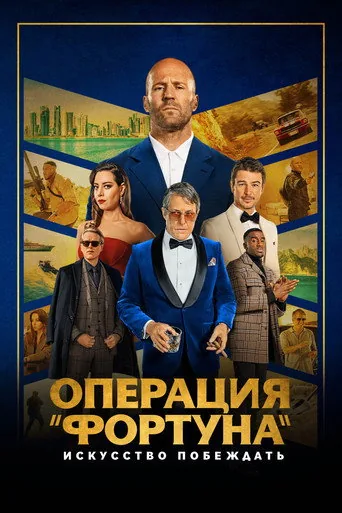

Операция «Фортуна»: Искусство побеждать 2023
Суперагент британской разведки Орсон Форчун наслаждался заслуженным отпуском, когда родине срочно понадобились его услуги. Из секретной лаборатории похищено предположительно смертельное оружие, поэтому собрав команду из лучших оперативников, Орсон выходит на посредника в готовящейся сделке продажи — миллиардера и большого поклонника знаменитостей Грэга Симмондса. А чтобы подобраться к нему, в качестве прикрытия решает использовать известного голливудского актёра Дэнни Франческо.
Открыть в каталогеДанные и постеры принадлежат их правообладателям. Этот продукт использует TMDB API, но не одобрен и не сертифицирован TMDB.